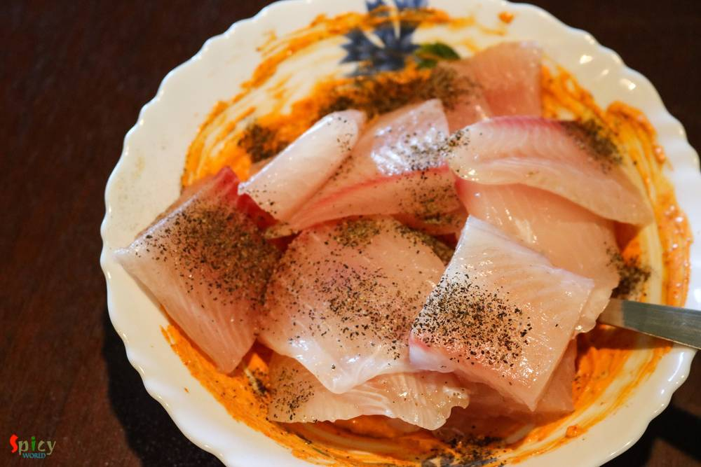
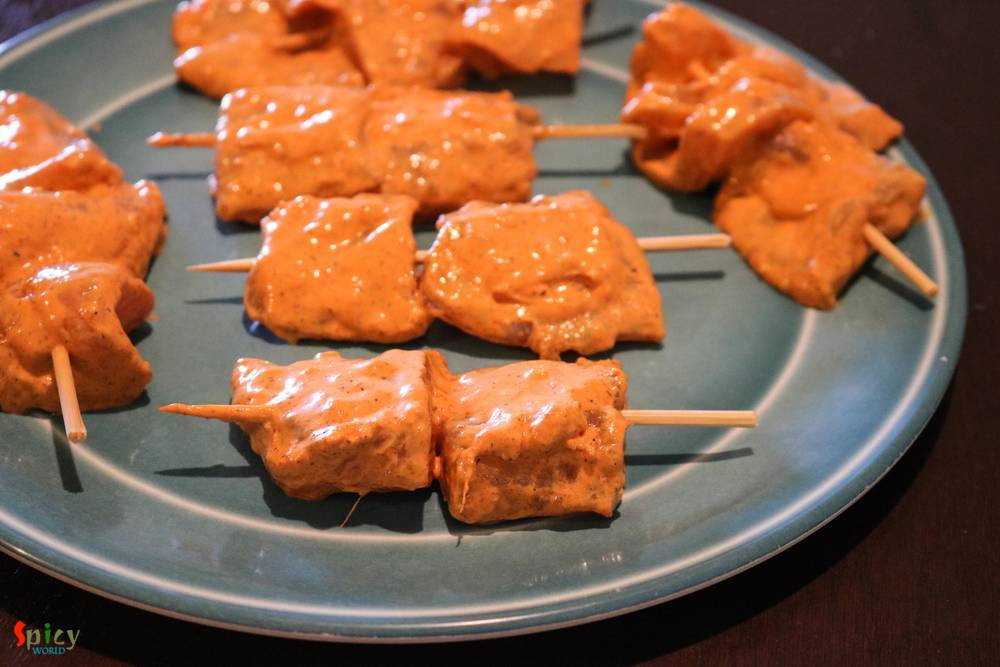

Simple and Easy Recipes
Tandoori Fish Tikka
© 2016 Spicy World, Published on: Aug 12, 2016
He bought a large packet of Tilapia fillets last week. He is a crazy fan of fish and can eat it everyday, whereas, I don't like to eat 'macher jhol' / 'mach vaja' each and every day like him. I get bored very quickly. So, this week I made these 'tandoori fish tikkas' along with some rice and simple daal. They came out delicious and also uplifted the taste of our boring lunch. I followed a very easy recipe to make these. Do try it at home and let me know how these tikkas turned out for you.

Ingredients
- 4 fish fillets, cut into chunk sized cubes. (Any white fish)
- 3 Tablespoons of curd / yogurt.
- 1 Teaspoon of ginger and garlic paste.
- 2 Teaspoons of hot red chilli powder.
- 3 Tablespoons of tandoori masala.
- 1 Teaspoon of ghee.
- 2 Tablespoons of oil.
- 1 Teaspoon of black pepper powder.
- Salt.
- Bamboo Skewers.


Steps
Add the curd, ginger and garlic paste, tandoori masala, red chilli powder and ghee in a mixing bowl. Mix well.
Now add the fish cubes, salt and black pepper powder into the marination. Mix well and keep it in the fridge for 1 hour.
Soak the bamboo skewers in water for 10 minutes.
Then arrange the marinated fish cubes on skewers.
Heat the oil in a flat pan.
Place those skewers on hot oil for 3 minutes each side. Make sure that the oil is very hot.
Your tandoori fish tikkas are ready ...
Serve them hot with some salads ...
")